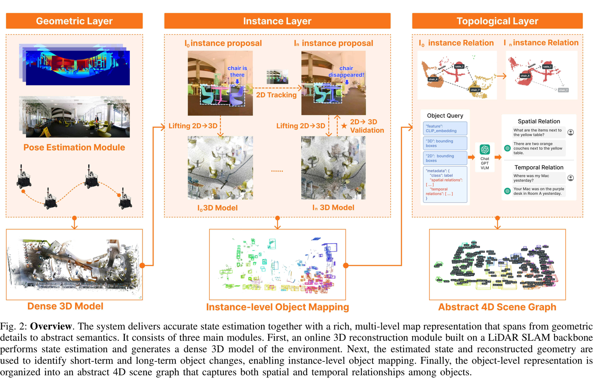
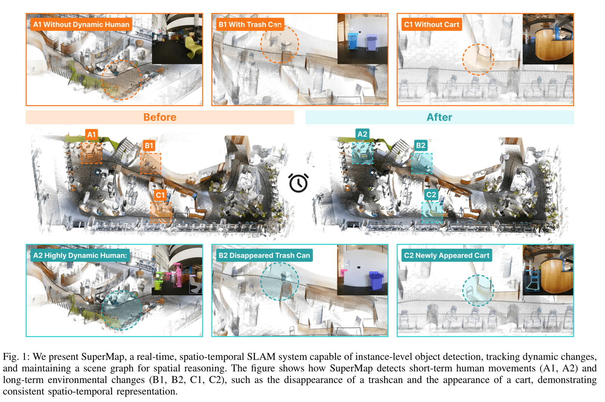

论文技术报告：SuperMap——面向视觉-语言导航的时空 SLAM 系统
arXiv ID：2608.22896
原文标题：SuperMap: A Spatio-Temporal SLAM System for Visual-Language Navigation
整理日期：2026-11-25
📋 论文概览
基本信息
- 作者：Shibo Zhao、Guofei Chen、Honghao Zhu、Zhiheng Li、Changwei Yao 等
- 机构：卡内基梅隆大学机器人研究所
- 发布时间：2026 年 8 月
- 领域：语义 SLAM、开放词汇建图、4D 场景图、视觉-语言导航
一句话总结
SuperMap 把高频几何 SLAM 与异步开放词汇感知缝合成一套在线系统，使机器人能够持续维护"什么物体在何处、何时出现或消失、与谁存在何种关系"的可查询世界模型。
核心贡献
- 提出实时、开放词汇、实例级的时空语义 SLAM 系统。
- 用 3D 投影补偿 2D 跟踪状态，以几何与语义一致性联合维护实例身份。
- 将物体地图抽象为带空间边与时间边的 4D 场景图，作为 VLM 的查询接口。
- 在 ScanNet、长期动态场景与真机导航上验证，并给出消融、频率与内存分析。

🎯 研究背景与动机
问题定义
传统 SLAM 回答"机器人在哪里、几何长什么样"，而人类指令通常涉及对象、关系与历史。论文把场景建模为物体节点加时空关系边的场景图，并要求联合估计位姿 $P_t$、实例身份 $\mathcal I_t$ 与地图 $\mathcal M_t$：
用链式法则拆成三个可独立求解的因子：
- $Q_t=\{C_t,D_t\}$：当前 RGB 与深度观测；
- $\mathcal M_{t-1}$：上一时刻地图；$\mathcal I_t$：当前检测的实例 ID 集合；
- 三个因子分别对应几何层、实例层的跟踪与更新、以及地图维护。
现有方法的局限性
- 静态开放词汇建图依赖完整扫描，难以嵌入在线闭环。
- 语义 SLAM 多为闭集、类级，无法稳定跟踪实例身份。
- 动态 SLAM 偏重短期运动，忽略物体被移走、新加入等长期变化。
- 直接把逐帧基础模型输出写入地图，会积累漏检、视角依赖标签与身份漂移。
[!important] 关键判断 论文把评价标准从"单帧识别精度"改成"长时程身份一致性"，这是后续所有模块设计的出发点。

🔬 方法论
系统三层结构与数据流见 Fig. 2：几何层输出位姿与稠密地图，实例层维护物体身份与变化，拓扑层把结果组织成 4D 场景图并序列化给 VLM。下面按数据流摘录论文全部核心公式（问题分解的式 (1)–(2) 见上一节）。
3.1 几何层：相机位姿
- $T^{(t)}_{WB}\in SE(3)$：$t$ 时刻机体系 $B$ 到世界系 $W$ 的位姿，由 SuperOdometry 估计；
- $T_{BC}$：相机到机体的固定外参，标定一次、全程不变；
- $P_t$：相机位姿，与深度 $D_t$ 一起构成观测 $Q_t$。
位姿是后续三件事的地基：把 2D 语义观测反投影到 3D、为跟踪提供运动补偿、维持多帧地图的全局一致。
3.2 实例层：混合跟踪状态与 3D 运动补偿
每条轨迹（tracklet）维护一个解耦状态：
- $c_i(t)=[x,y]^\top$：图像平面质心；
- $s_i(t)=[w,h]^\top$：边界框宽高，若包含尺度速度则升为 $\mathbb R^8$；
- $\dot c_i(t)$：图像平面内的平移速度。
标准 2D 跟踪器在机器人快速机动时会把自运动误判为物体运动。SuperMap 改用地图中实例的 3D 质心 $X_i$ 投影出预测位置：
- $X_i$：实例在 $M_{t-1}$ 中的 3D 质心（世界系）；
- $P_t^{-1}$：世界系到当前相机系的变换；
- $K$：相机内参；$\pi(\cdot)$：透视投影。
该投影作为卡尔曼滤波的先验，代入标准状态转移：
- $F$：状态转移矩阵；$w_t$：过程噪声，协方差为 $Q$；
- 只替换“预测”这一步，不改 ByteTrack 框架，因此大视角变化下实例 ID 仍能连续。
3.3 实例层：概率几何一致性更新（变化检测）
对上一时刻地图点 $X_k$，定义投影期望深度与深度残差：
- $T_{CW}$：世界系到相机系；$\|\cdot\|_z$ 取变换后的 $z$ 分量；
- $u=\pi(X_k)$：地图点在当前图像的投影像素；
- $D(u)$：该像素的实测深度。
按阈值 $\tau_\epsilon$ 把每个点分为三类：
- $\Delta d>\tau_\epsilon$：实测比期望更近，点被前景遮挡，只说明“暂时看不见”，不能删；
- $\Delta d<-\tau_\epsilon$：实测比期望更远，点浮在观测表面之前，才作为物体消失的证据；
- 只有 Observable 的点参与后续语义更新。
存在性用 log-odds 递推累积多帧证据：
- $L(n)=\log\frac{n}{1-n}$：把概率乘法变成加法，可无限递推且数值稳定；
- $P(o_k\mid Q_t)$：由式 (9) 得到的单帧逆传感器模型；
- 判为动态或消失的点在更新中被惩罚，累计到阈值才从地图剪除，避免单帧遮挡导致误删。
3.4 实例层：贝叶斯语义融合
每个实例维护类别分布 $P(L_j=c)$，用贝叶斯递推融合检测器的逐帧观测：
- $L_j$：第 $j$ 个实例的类别变量；$z_t$：当前帧检测结果；
- $P(z_t\mid L_j=c)$：检测器的混淆矩阵；
- $\eta$：归一化常数，保证各类概率之和为 1；
- 后验过低的物体点会被移除，抑制同一物体在“椅子／座位／凳子”之间的标签抖动。
3.5 拓扑层：4D 场景图
地图抽象为图结构：
- $V$：物体实例节点；
- $E_s$：空间边，由类别相关的几何谓词建立；
- $E_t$：时间边，由实例关联结果 $I_t$ 串起同一物体的轨迹。
以“在……上”为例，空间边判据为：
- $z^A_{\min}$、$z^B_{\max}$：A 的最低点与 B 的最高点；
- $\mathrm{IoU}_{xy}(B_A,B_B)$：两个 3D 框在 $xy$ 平面的投影重叠率；
- $\gamma$：重叠阈值；先按质心距离聚类，只在邻近物体对之间判定，避免 $O(N^2)$ 开销。
3.6 视觉-语言导航接口
局部子图序列化为“实例 ID + 标签 + 3D 质心 + 空间/时间边”的文本，VLM 在 <answer></answer> 中返回目标实例 ID，解析器再从地图取出质心作为航点：
- 语言只负责“选哪个物体”，坐标由确定性模块查表得到；
- 因此 VLM 的幻觉不会直接进入控制回路，输出始终是可执行的 3D 坐标。
📊 实验与结果
ScanNet 类别级结果
| 方法 | 表示方式 | 无背景 mIoU | 无背景 Acc | 含背景 Acc |
|---|---|---|---|---|
| RayFronts | 点特征 | 41.29 | 56.76 | 49.15 |
| ConceptGraphs | 物体级 | 21.62 | 31.05 | 35.80 |
| HOV-SG | 物体级 | 26.79 | 35.17 | 38.52 |
| SuperMap | 物体级 | 27.42 | 55.48 | 33.00 |
SuperMap 的无背景准确率为 55.48%，比 RayFronts 低 1.28 个百分点，但明显优于其他物体级方法。
消融实验
| 配置 | 精确率 | 召回率 | F1 |
|---|---|---|---|
| 去除 2D 跟踪器 | 0.7787 | 0.4595 | 0.5780 |
| 去除语义融合 | 0.7929 | 0.3870 | 0.5201 |
| 去除几何一致性更新 | 0.8189 | 0.4448 | 0.5764 |
| 完整系统 | 0.8677 | 0.4955 | 0.6308 |
三个模块均有贡献，其中语义融合缺席时 F1 下降最多（0.1107）。
运行频率
| 模块 | 更新频率 |
|---|---|
| 位姿估计 | 10 Hz |
| 稠密 3D 建图 | 3 Hz |
| 2D 实例分割 | 1 Hz |
| 4D 场景图更新 | 5 Hz |
💡 关键见解
以下四条不复述贡献，而是从机制层面给出可迁移、可证伪的判断。
- 可见性是动态地图更新的中间变量。 仅凭"本帧未检测到"无法区分遮挡与消失；SuperMap 先用深度残差（式 7–9）判定地图点是否本应可见，仅对 Observable 点开放语义更新。该设计把"存在性"从检测器输出中解耦，代价是强依赖深度质量——透明、反光或远距离稀疏深度会使 $\tau_\epsilon$ 判据退化，论文未报告该条件下的失败率。
- 3D 地图同时充当跟踪器先验，改变了数据关联的误差来源。 用地图质心投影（式 5）替代 2D 线性外推，把机器人自运动从图像运动中分离；消融中去掉 2D 跟踪器使 F1 从 0.6308 降至 0.5780（Table V）。其边界在于：关联质量依赖位姿精度与已建图实例，首次观测或位姿漂移时退化为普通 2D 跟踪。
- 存在性与标签两套置信度构成地图的"免疫系统"，但时间尺度不同。 log-odds（式 8）要求多帧一致证据才删除，抑制遮挡误删；贝叶斯标签融合（式 10）抑制跨视角标签抖动。消融中去掉语义融合损失最大（F1 0.5201），说明开放词汇检测器的方差是主要噪声源；但两者各自设阈，缺少联合校准。
- 场景图作为接口契约，把 VLM 的不确定性限制在离散选择上。 VLM 只返回实例 ID，坐标由确定性模块查表（Sec. IV-D），语言幻觉无法直接进入控制回路。代价是表达能力受限于地图中已存在的实例：图中没有的物体无法被指令引用——这也是"开放词汇"仍受预定义提示词列表约束的直接后果。
🔍 局限性与未来工作
假设层
- 静态世界与固定外参假设。 式 (3) 假定 $T_{BC}$ 标定不变，式 (7) 假定深度与位姿严格同步；长期运行中的外参漂移与时间同步误差会直接进入 $\Delta d$，论文未量化其传播。
- 深度可用性假设。 变化检测建立在阈值 $\tau_\epsilon$ 上；对透明/反光表面与远距离稀疏点云，判据退化为随机决策。论文未给出 $\tau_\epsilon$ 的取值、敏感性或失效案例。
- 预定义提示词列表。 开放词汇检测由固定 prompt 列表驱动，词表外物体无法进入地图，与"开放世界发现"存在本质差距。
方法层
- 混淆矩阵来源未交代。 式 (10) 需要 $P(z_t\mid L_j=c)$，论文未说明该矩阵来自经验统计、均匀先验还是在线估计，复现时是黑盒。
- 联合阈值缺失。 存在性 log-odds 与标签后验各自设阈，可能出现"标签置信度高、存在性低"的矛盾状态，论文未讨论冲突消解。
证据层
- 评测规模与基线公平性有限。 长期变化仅 6 个目标物体、单场景 10 分钟（30 m × 20 m），消融仅 41 个标注物体；Khronos 因运行问题全表为 "–"，基线覆盖不完整。
- 缺少负结果与压力测试。 未解释新出现物体的漏检分布（cart 检测召回仅 0.262），也未覆盖重复实例、严重遮挡与位姿漂移。
系统层
- 语义前端构成吞吐瓶颈。 2D 分割仅 1 Hz，与 10 Hz 位姿环相差一个数量级；快速出现又消失的物体在低帧率下天然易漏。
未来方向（与上述局限对应，需可检验）
- 针对 1–2：引入在线外参与深度不确定性估计，报告 $\Delta d$ 的误差传播与 $\tau_\epsilon$ 敏感性曲线；
- 针对 3：接入开放世界物体发现与自动提示生成，在词表外类别上评测召回；
- 针对 4–5：公开混淆矩阵的估计方法与联合校准协议，报告校准误差（ECE）；
- 针对 6–7：建立跨天、跨楼层基准，报告身份保持率、成功率与负结果；
- 针对 8：用分割跟踪或异步检测补偿低帧率，报告时延—召回权衡。
📚 相关工作对比
比较轴取五个维度：(i) 地图表征与实例粒度、(ii) 数据关联机制、(iii) 时序/变化建模、(iv) 开放词汇来源、(v) 实时性与评测协议。
| 方法 | 问题设定与假设 | 核心机制 | 相对本文的差异 | 证据强度与可比性 |
|---|---|---|---|---|
| ConceptGraphs | 离线完整扫描；静态场景 | SAM + CLIP 构建对象图 | 缺在线维护与实例时序 | 与本文在 ScanNet 同类评测，可比 |
| HOV-SG | 离线分层建图 | 层次化开放词汇场景图 | 依赖预扫描，构图分钟级 | 同类评测可比，内存开销大 |
| Kimera | 实时语义 SLAM，闭集 | 3D 动态场景图 + 几何后端 | 类级标签，无开放词汇 | 不同设定，不可直接比较 |
| Khronos | 时空语义 SLAM，闭集 | 长短时动态对象建模 | 实例跟踪与实时性受限 | 本文表中无有效数值，不可比 |
| DualMap | 动态场景开放词汇建图 | 双地图变化更新 | 2D 分割不稳导致实例缺失 | 本文协议下出现检测召回近 0，仅定性参考 |
| SuperMap | 在线、开放词汇、实例级 | 3D 辅助 2D 跟踪 + 几何/语义概率更新 + 4D 图 | — | ScanNet 实例级领先，长期变化为小规模案例 |
分析三点：
- 继承关系：SuperMap 沿用 object-centric 建图的 SAM/CLIP 语义路线与成熟 SLAM 几何后端；它与 ConceptGraphs/HOV-SG 的差别不在表征，而在把"一次性构图"改造成持续的数据关联问题。
- 真正的位移：Khronos 同样建模长期变化，但闭集且非实时；SuperMap 的贡献是让"实时 + 开放词汇 + 实例级 + 长短时动态"同时成立，代价是语义前端低频与提示词依赖。这属于系统级组合创新，而非单一算法突破。
- 可比性警告：与 RayFronts 的点特征路线在监督信号与算力预算上不同，类级指标不可直接排名；Khronos、DualMap 的长期变化结果因对方运行失败而不完整，只能作定性参考。
🎓 综合评价
- 问题价值：长期开放词汇建图是语言导航的真实瓶颈；现有工作多停在离线构图，本文把"维护"提为一等公民，问题设定具有现实约束下的必要性。
- 技术新颖性：以组合创新为主。3D→2D 运动补偿、几何/语义双校验、4D 图接口均有先例，但首次被组织成满足实时、开放词汇、实例级与长短时动态的统一流水线；单项新颖性有限，系统整合价值明确。
- 证据强度：ScanNet 实例级显著领先（椅子 mAP50 63.76 vs HOV-SG 4.58），但类级精度并非最优；长期变化与导航以案例为主，缺统计显著性与跨环境验证；消融充分但规模偏小（41 个物体）。
- 可复现性：声明开源并给出频率与内存；但 $\tau_\epsilon$、混淆矩阵与提示词列表未披露，复现存在关键黑盒，工程迁移成本被低估。
- 影响边界：适合作为在线语义建图的工程基线；不适合高动态物体跟踪或真正的开放世界发现。若后续工作补齐概率校准与大规范评测，其"一致性维护"框架可能沉淀为标准组件。
一句话裁决：系统集成价值大于方法创新——是一套可部署的时空语义建图基线，而非动态 SLAM 的理论突破。
推荐阅读对象：从事语义 SLAM、具身记忆与 VLN 系统集成的研究者与工程师，尤其适合作为"基础模型感知接入长期在线系统"的架构参考。
📎 附录
术语表
| 英文 | 中文 |
|---|---|
| Spatio-Temporal SLAM | 时空 SLAM |
| Open-Vocabulary Perception | 开放词汇感知 |
| 4D Scene Graph | 4D 场景图 |
| Visual-Language Navigation (VLN) | 视觉-语言导航 |